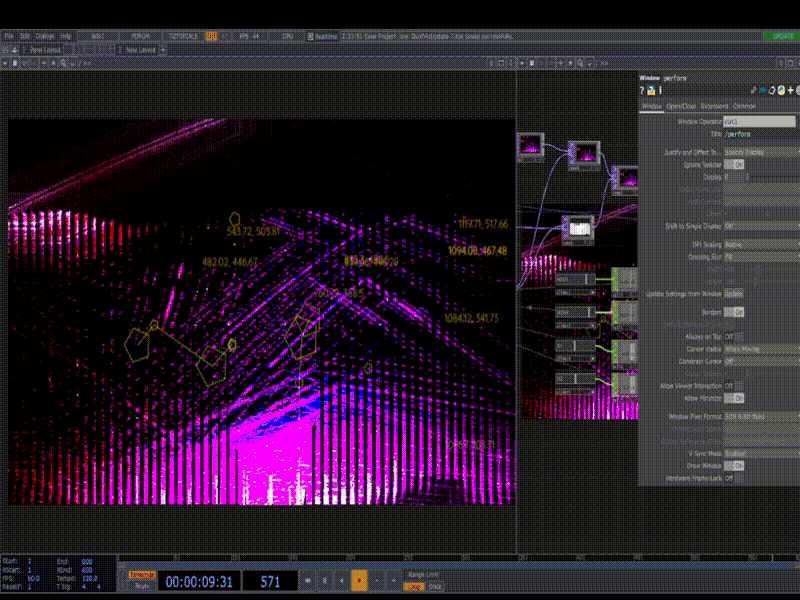

05 / Selected Work
Concert Silhouette Study

A visual effects practice focused on applying color and motion to a silhouette for a concert setting.
Back to projects ↗05 / Selected Work

A visual effects practice focused on applying color and motion to a silhouette for a concert setting.
Back to projects ↗